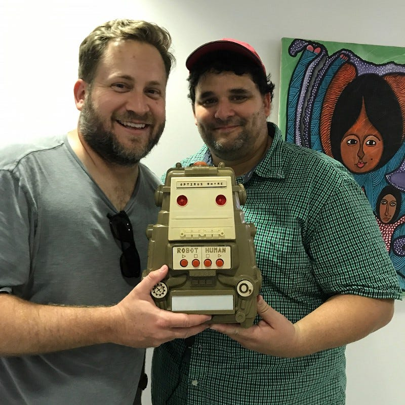

"Poetry Robots" are original machines to disseminate poems through technology. The Poem-o-matic prints poems on receipt paper. Using a curated database of short poems, the Poem-o-matic prints one poem at a time, at random, with the touch of a button. Each poem tears away (just like a receipt) and can be taken home.
Optimus Rhyme is a robot who reads poems out loud on command. Once initiated, Optimus will read all of the poems in his hard drive in random order, over and over, until someone shuts him off. (Just like a real poet.)
O, Miami Poetry Festival 2016-2018

Related
-
Poetry Robots: From Poem-o-matic to Alphie 2.0
The full decade-long arc of the series.
-
Poetry Phone — Part 4: Making It a Banana
The latest Poetry Robot, banana-shaped.